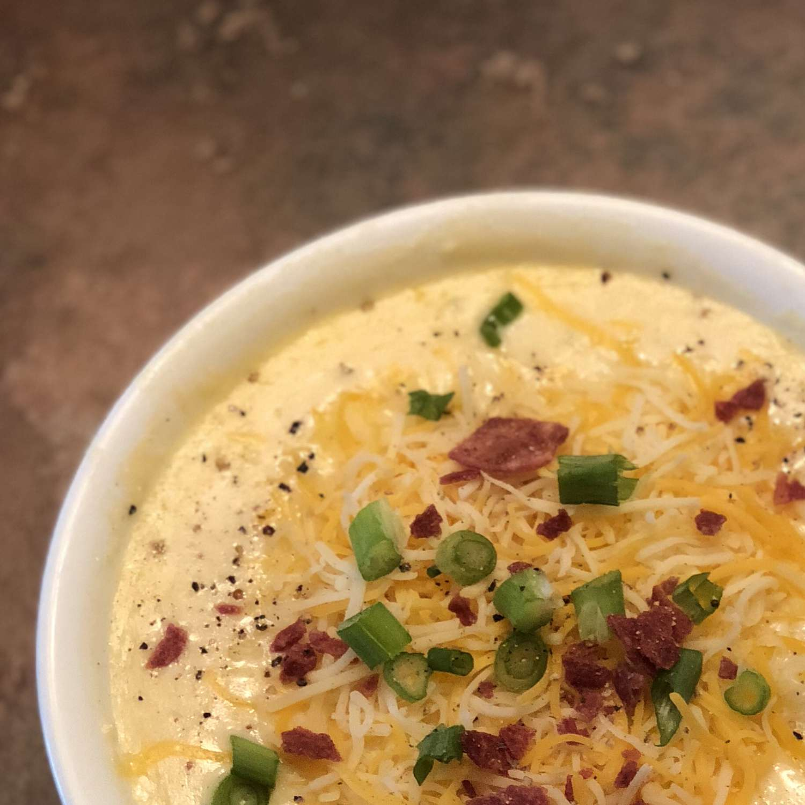

Soup

This baked potato soup is thick, creamy, and an excellent way to use leftover baked potatoes.
Ingredients
- Butter
- Onion
- Milk
- Bacon
Steps
- Cook the bacon.
- Melt the butter, then whisk in the flour and milk.
- Add the potatoes and onions and bring to a boil.
- Reduce to a simmer, then stir in the remaining ingredients.